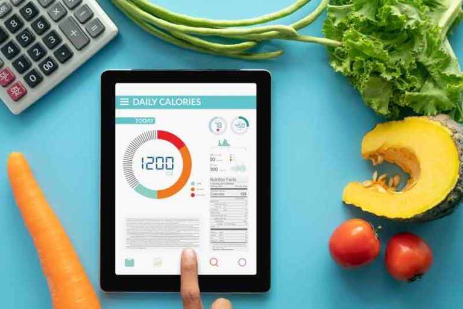

¡Descubre una Vida Saludable
a Través de Nuestra Guía Nutricional!
¿Quieres tomar el control de tu salud y bienestar?
Nuestra guía nutricional es tu mejor aliada.
En un mundo lleno de opciones alimenticias,
es fundamental tener conocimientos sólidos sobre
cómo los alimentos afectan tu cuerpo.
¿Qué Ofrecemos?
- Consejos y trucos para planificar tus comidas de manera efectiva.
- Conocimientos clave sobre nutrición para una dieta equilibrada.
- Personalización de consejos según tus necesidades individuales.
- Estrategias para perder peso, ganar energía y mejorar tu calidad de vida.
- Recetas deliciosas y saludables para inspirar tu cocina.
¡Embárcate en un viaje hacia una alimentación consciente y nutritiva!
¡Tu salud y bienestar están a solo un folleto de distancia!


¡Controla tus Carbohidratos
con Nuestro Contador Especializado!
¿Necesitas mantener un seguimiento riguroso de tus carbohidratos?
Nuestro contador de carbohidratos es la herramienta
perfecta para ayudarte a controlar tu ingesta
y mantener un estilo de vida saludable.
¿Qué Ofrecemos?
- Una manera sencilla y eficiente de rastrear tus carbohidratos diarios.
- Herramientas para calcular y anotar la cantidad
exacta de carbohidratos en tus comidas. - Sugerencias y consejos para manejar tu ingesta
de carbohidratos de manera efectiva. - Personalización de tus objetivos diarios de carbohidratos.
- Apoyo para una alimentación consciente y saludable.
¡Empieza a tomar el control de tus carbohidratos
y toma decisiones informadas para tu bienestar!
¡Tu salud está a solo un contador de carbohidratos de distancia!